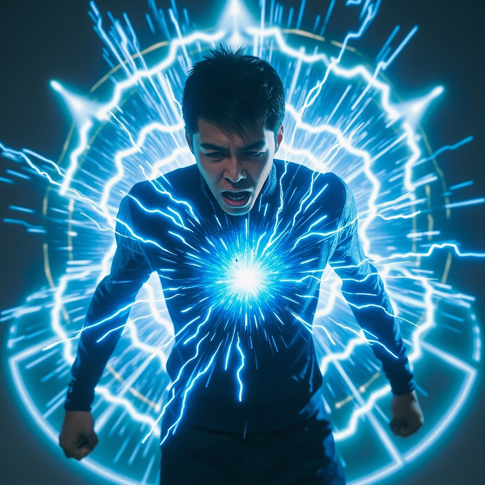
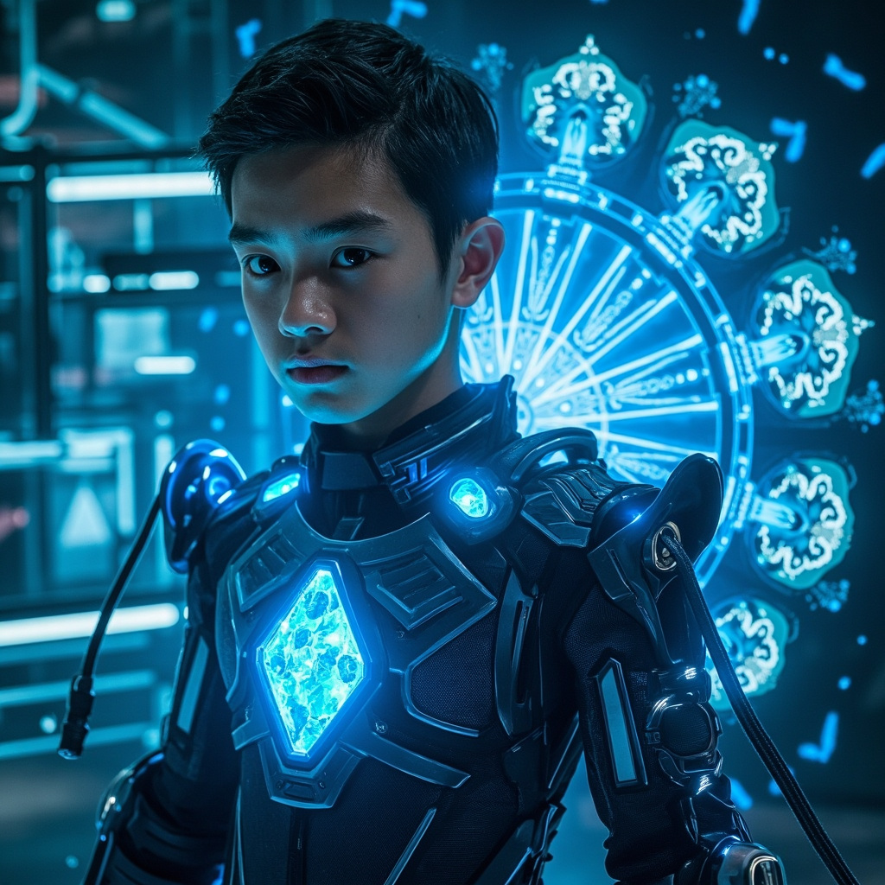
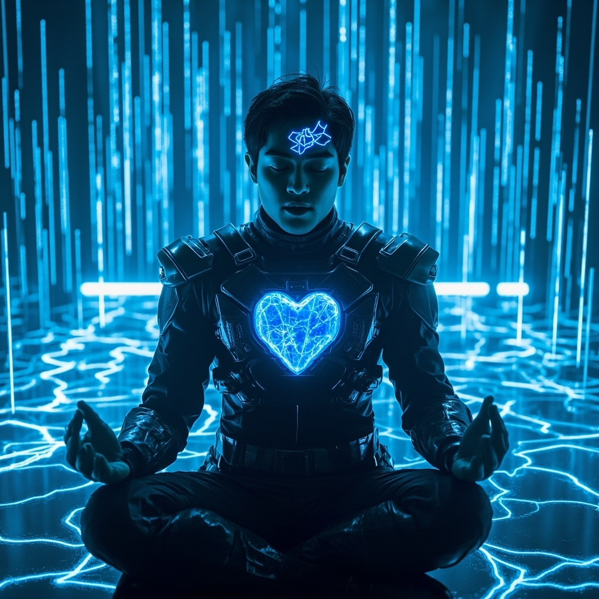
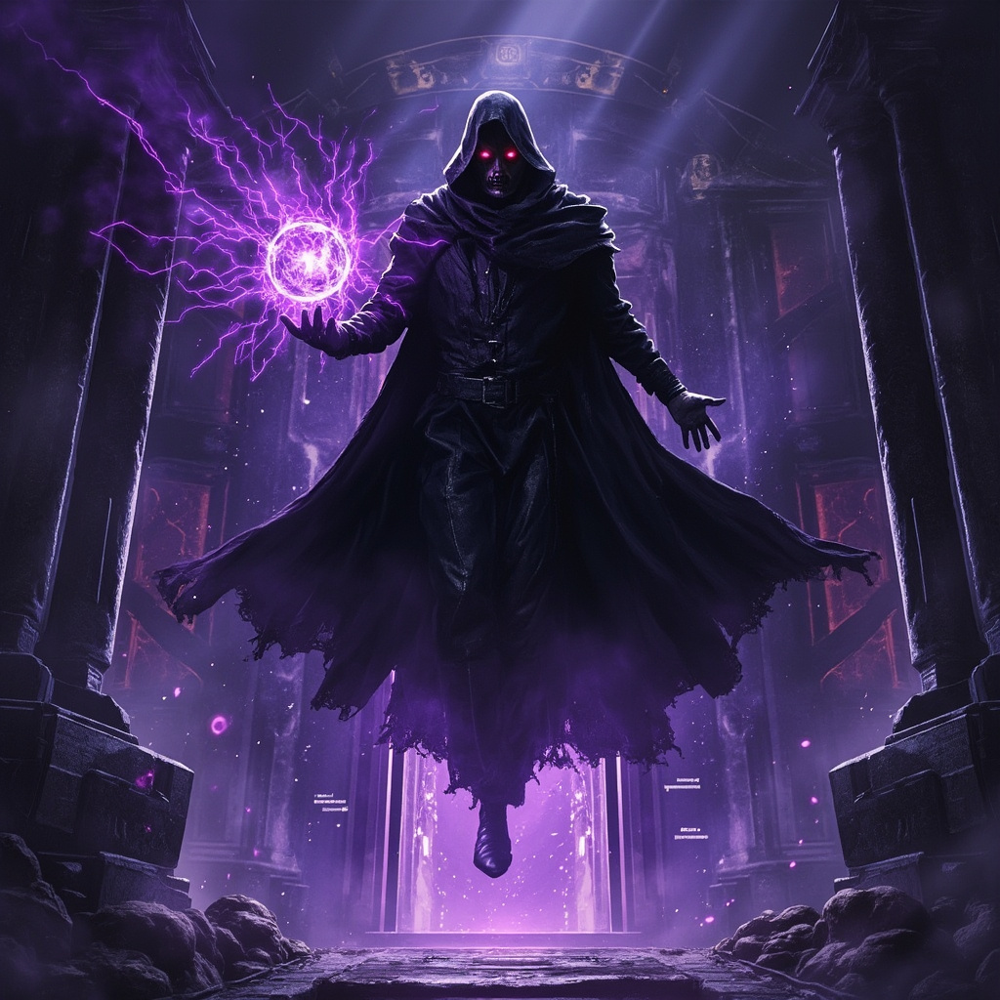

林塵以靈芯系統解析靈魂本質，踏上最危險的修行之路
林塵盤膝坐在實驗室中央，四周環繞著全息投影的靈紋陣列。空氣中懸浮著數百個淡藍色的數據流，每一道都代表著靈魂結構的一個參數。經過三個月的閉關研究，他終於觸及了修真與科技最核心的交匯點——靈魂的本質。

三十六根靈能導管從天花板垂下，連接著林塵頭部的神經接口，另一端接入靈芯系統的核心處理單元。劇烈的刺痛從大腦深處傳來，他的意識正被一點點拆解、分析。這是一種極其危險的嘗試——他正在將自己的靈魂作為實驗對象。
全息投影上，林塵的靈魂結構圖逐漸清晰。那是一個複雜的三維網狀結構，由無數閃爍的光點和連接線組成。每一個光點代表一個記憶單元，每一條連接線代表一種思維模式。在靈魂結構的核心區域，他發現了與修真功法中描述的「道基」驚人地相似的編碼序列。

林塵感覺自己的靈魂被投入了熔爐。記憶單元被重新排列，無用的信息被壓縮歸檔，重要的知識被強化標記。痛苦難以形容——這不僅是肉體的痛苦，更是靈魂層面的撕裂與重組。靈魂編程第一階段完成，靈魂強度提升372%，計算能力提升541%。

就在靈魂編程研究取得突破之際，一個身穿黑色長袍的神秘人懸浮在實驗室入口上方，手中托著一顆不斷旋轉的紫色光球。兜帽下的陰影中，一雙泛著紅光的眼睛直視而來。「林塵，關於靈魂編程的研究，我們需要談談。」沙啞的聲音帶著不容拒絕的壓迫感。林塵深吸一口氣，眼中閃過決然之色——是時候測試一下靈魂編程的實戰效果了。